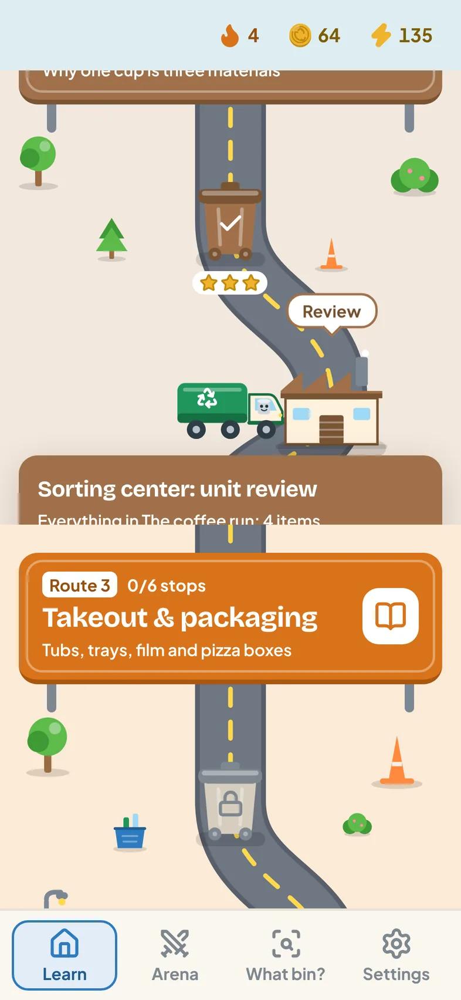
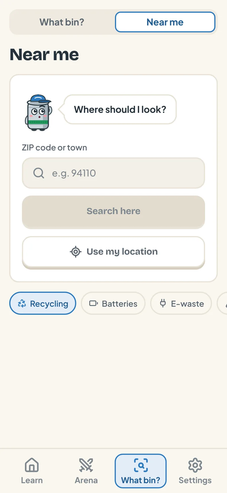
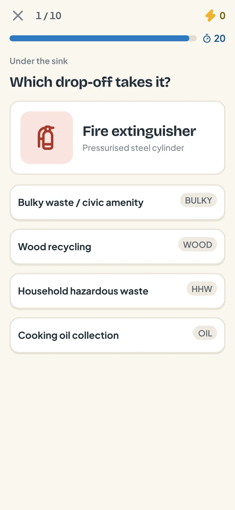

Lessons on a recycling route
Five-minute lessons, one neighbourhood at a time. Get one wrong and you see why, then it comes back at the end. No hearts, no lives.

53 lessons and a sorting centre review at the end of each unit



US Tin is a free app that teaches you what goes in which bin, five minutes at a time, and answers on the spot when you're holding something over one.
The course
Across 12 neighbourhoods, from Bottles & cans to Around the house. About five minutes a stop.
Bottles & cansAround the house
Most people bin it whole. US Tin takes it apart: the lid, the sleeve and the cup each get their own answer, down to the resin code, with the reason why.
Not compost either: the plastic lining doesn't rot.
Four tabs, one Tin. Everything runs on the same rulebook, so a lesson never teaches something the lookup would contradict.
Five-minute lessons, one neighbourhood at a time. Get one wrong and you see why, then it comes back at the end. No hearts, no lives.

53 lessons and a sorting centre review at the end of each unit
Search 177 items or take a photo. Every part gets its bin, its resin code and the reason.

Asks a follow-up only when it changes the answer
Batteries, paint, old phones. Type a ZIP code and see the nearest places that accept it.

Real places from OpenStreetMap, never invented ones
Ten timed questions. Share a six-digit PIN and everyone plays the same match, whenever they can.

Eight leagues, from Bronze to Pristine
Every right answer earns a coin. Spend them on things for Tin to wear, all over the app.
27 things to wear. Nothing here costs real money.
Photo recognition shipped with a bug. The model gives 1,001 scores, a background class and then the 1,000 real ones, and we read them one place off. Every guess landed on the class next door. A photo of an espresso cup came back as "cup", which was close enough to hide the problem.
Fixing the bug only got us to 13%. What actually worked was a second model, trained on 2,527 photos of real waste, and teaching the app to say "not sure" instead of guessing.
Confidently wrong answers fell from 31.6% to 4.3%. The photos are from the TrashNet dataset: single objects on a white board, so a real kitchen counter will do worse. A useful answer is the right item, or the right material when it isn't sure of the item.
About 24% of what US towns send to landfill is food.1 Buried without air, it rots into methane, which traps about 80 times more heat than CO₂ over 20 years.1 Food is behind about 58% of the methane that escapes city landfills.1
That's why the route has a whole unit on it, right after Food scraps, with a bonus guide to turning a storage tote into a compost bin.
US Tin is a web app: no App Store, no download, no account. Add it once and it opens full screen, like any other app, with your progress kept on the device.
You're already using US Tin from your home screen. Nice.
Chrome and other browsers on iPhone have the same Share button, in the address bar.
On iPad the app opens in a phone-width column, centred. Lessons are built for one hand.
Samsung Internet and Firefox call it Add page to, then Home screen.
It's made for phones, though. Scan the code to open it on yours.
What changed, and when. Taken from the project's history, so it's in order and nothing is left out on purpose.
This website. The app moved to its own address under it, and old links forward there.
US Tin got its own look: warm paper, ink, and far fewer words on every screen.
Leaderboard names are rolled from three family-friendly words, never typed. Players show up as their own dressed-up Tin.
Near me stopped taking minutes to load, and stopped blaming your connection for our server problems.
The Arena: timed matches, game PINs for friends, and eight leagues from Bronze to Pristine.
A Food & methane unit, and a bonus guide to building your own compost bin.
Motion went on a budget: the more often something happens, the less it moves.
The lesson path became a recycling route. Coins and a shop for Tin. Hearts were dropped, so mistakes cost nothing.
The course: lessons generated from the same catalog the lookup uses.
Found the off-by-one that made recognition random, and trained the waste-photo model that fixed it.
Day one: point a camera at something, get a bin.
Yes. No ads, no subscription, no account. Coins are earned with right answers and can't be bought.
US Tin gives general guidance for the US. Every town runs its own program, so if your hauler or city says something different, they win. Near me shows real places from OpenStreetMap; call ahead, because hours and rules change.
Nothing leaves your phone. Recognition runs in the browser, on the device. There is no upload and no server that sees the picture.
On your device, in the browser's storage. That's why there's no sign-up. It also means clearing your browser's data, or switching phones, starts you over.
Yes. Host a game in the Arena and share its six-digit PIN. Everyone plays the same ten questions, at the same time or any time that week, and the podium fills in as they finish. There's no teacher dashboard.
Tell us, with the item and your town: open an issue on GitHub. Every answer comes from one catalog, so a fix there fixes the lessons too.
Not yet. The web app does everything the store version would, including working from your home screen. The photo recognition currently runs in the web version only.